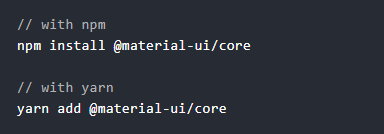
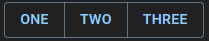
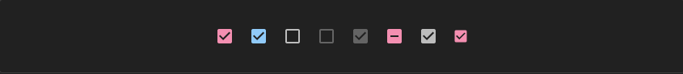
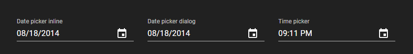
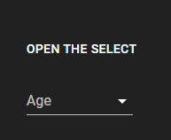
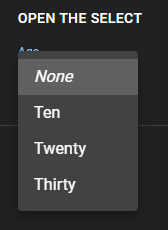
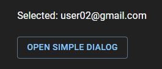
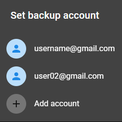

To install, you need to register the following commands
Here's a quick example to get you started, it's literally all you need:
import React from 'react';
import ReactDOM from 'react-dom';
import Button from '@material-ui/core/Button';
function App() {
return (
);
}
ReactDOM.render(Now let's take a closer look at what is happening here.
import Button from '@material-ui/core/Button';
Here we connect the button component, which we will use later.
This is where we specify the basic styles of the button. variant = contained means that it will contain a pronounced background. color = primary indicates what the main color will be for our button. There are several basic colors in the documentation, but depending on the needs, even they can be modified for yourself. And Hello World it is the content of our button.
And here is the end result.
Buttons can also be combined into groups. There is a special component for this ButtonGroup. It is also very easy to use. We need to place our buttons in this component, and the whole group is ready.
And here is the result.
Checkboxes
The source code
import React from 'react';
import Checkbox from '@material-ui/core/Checkbox';
export default function Checkboxes() {
const [checked, setChecked] = React.useState(true);
const handleChange = (event) => {
setChecked(event.target.checked);
};
return (
Checkboxes allow the user to select one or more items from a set. Checkboxes can be used to turn an option on or off. If you have multiple options appearing in a list, you can preserve space by using checkboxes instead of on/off switches. If you have a single option, avoid using a checkbox and use an on/off switch instead.
Animation FABs
Date pickers and Time pickers provide a simple way to select a single value from a pre-determined set.
Radio buttons allow the user to select one option from a set.
RadioGroup is a helpful wrapper used to group Radio components that provides an easier API, and proper keyboard accessibility to the group.
Gender
Select components are used for collecting user provided information from a list of options.
Menus are positioned over their emitting elements such that the currently selected menu item appears on top of the emitting element.
 The Select component can handle multiple selections. It's enabled with the multiple property.
Progress indicators commonly known as spinners, express an unspecified wait time or display the length of a process. The animation works with CSS, not JavaScript.
Dialogs inform users about a task and can contain critical information, require decisions, or involve multiple tasks.
Simple dialogs can provide additional details or actions about a list item.
 